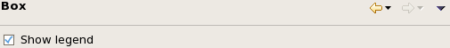

Box preference settings
The Box preference page lets you set display options for box charts.

These settings are available:
Show legend: If this option is checked, a legend is displayed beside the chart.
Functional changes
- Introduced in SmarTest 7.2.2